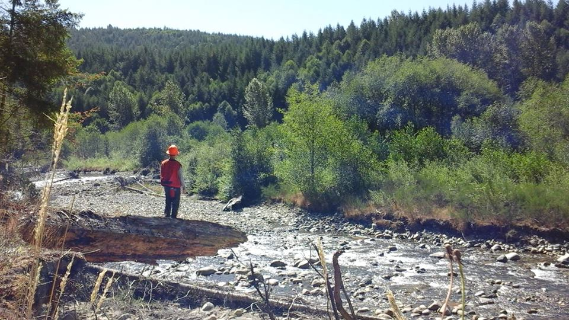

My name is Bennett Clark and I am currently a student in the Geospatial Technologies graduate program at the University of Washington Tacoma. When I'm not in class, studying or completing my homework, I work as a Forest Engineering Technician. I get to spend my days wandering the forest mapping environmental boundaries and identifying stream systems for timber companies such as Weyerhaeuser.

I recieved my undergraduate degree in Earth and Space Sciences: Geology from the University of Washington in 2012. Upon graduating I enlisted in the U.S. Army as a Geospatial Engineer. It was here that I learned to appreciate GIS and its applications.When I left active duty I decided I wanted to further my education with GIS but wanted to focus on the technical aspects including web based and automation which lead me to this particular program. I love the outdoors and many of my hobbies take place there (hiking, camping, snowboarding, backpacking, wakeboarding, and mountain biking to name a few)